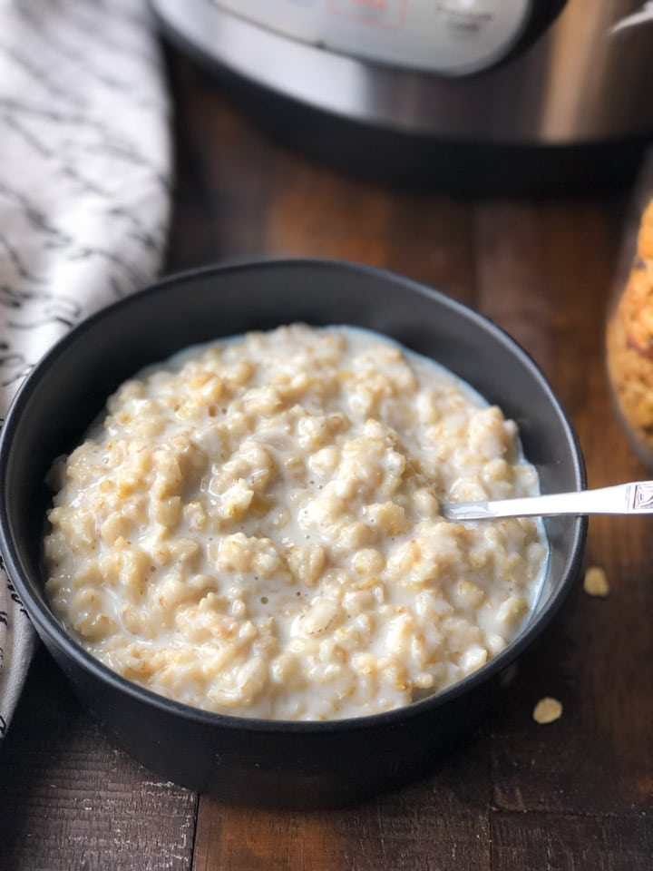

Protein breakfast

Protein breakfast
The dish is simple and made fast, It contains only about 500 kcal, It does contain about 40g of protein tho.
The dish can be made in the evening for the next day, served cold, or in the morning served hot
Ingredients:
- 0.3 l of 1,5% low fat milk
- 1 scoop (33g) of desired whey protein powder mixed in 0.1 l of water
- 0.3 l of water
- 80g of oatmeal
Steps:
- Put the milk and the water in a pot and start brewing it on medium heat
- While the fluids are warming up, in a separate bowl, mix
the scoop of protein powder with 0.1 of water untill smooth, in another bowl, weigh and prepare
your 80g of oatmeal.
- When the fluids start to mildly boil, add the oatmeal and mix constantly for aproximatelly 5 minutes.
- After 5 minutes the meal should be thicker, like a yogurt, that's when you add the protein fluid and proceed mixing and cooking It
for another minute.
- Remove the pan from the heat, pour it into a bowl (its supposed to be like a thick yogurt or a runny pudding
- Eat fresh and hot, or let it rest through the night and eat a thicker cold pudding the next day
Side note:
If you don't mix constantly, the bottom starts to burn,
for the very same reason we add the protein at the end of cooking.
Wash the pot after pouring the breakfast out, so it doesnt harden and stick to it
Return to home page